Images only
One photo first. Approve the look. Make the set.
At the end: You can plan a photo set, approve its look, and check each output file.
Use ChatGPT through Codex, or Grok. This example makes two coffee-shop photos and one English carousel PDF.
The steps add to 60 minutes. Pause when you need to. Making files can take longer.
Describe your photo set
5 minOn Home, choose Images only. Describe the photo count, purpose, sizes, words and language.
Ask for a carousel if you need a LinkedIn PDF.

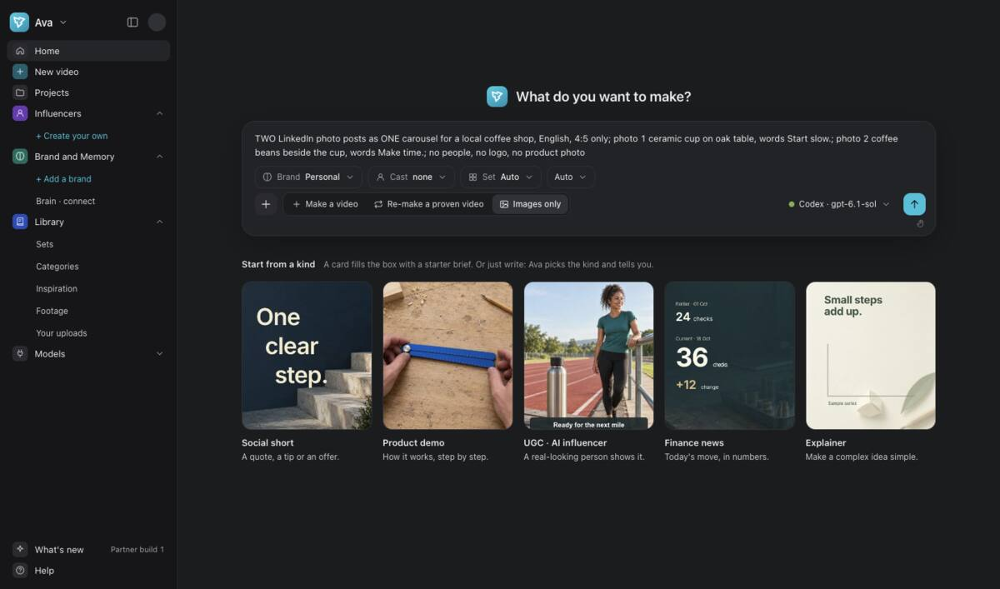
Check Memory
4 minOpen Memory. Check your brand kit, saved looks and characters.
Confirm or change what Ava knows. Choose Confirm and pick a style.

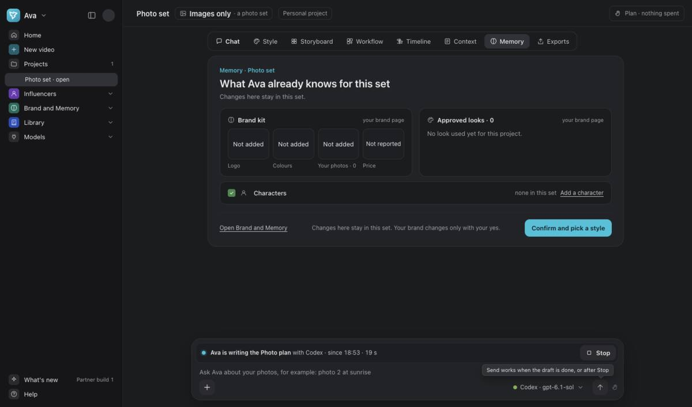
Choose a style
5 minOpen Style. Select a look, such as Quiet daylight. Read why Ava picked it.
Scroll until Use this style is visible above the chat box. Choose it.

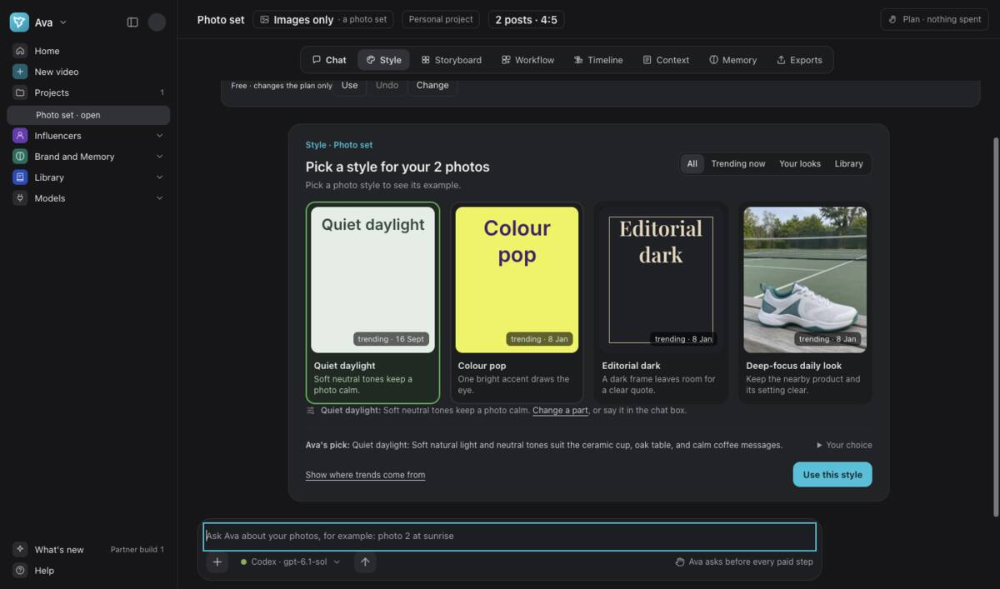
Choose how words appear
4 minIn Style, open Change a part. Find Words on the picture.
Choose Bottom caption for this example. This puts a short caption below the subject.

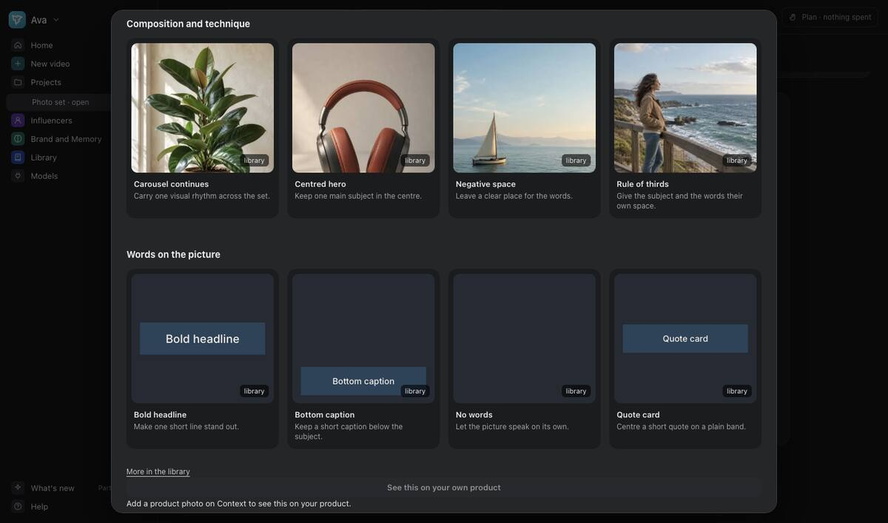
Check Context
5 minOpen Context. Check your brief and materials. Add your own photo when you show a real product.
Use Use Ava’s font for now if you do not need a brand font. Choose Plan first when ready.
Read the sharing card before you allow a tool. Untick files that must stay on this Mac.

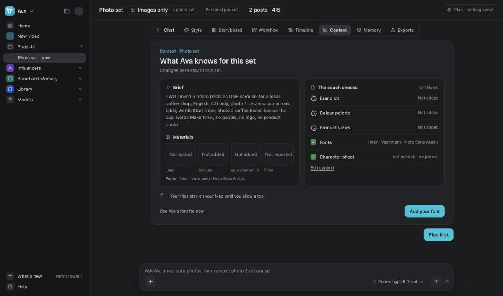
Read the photo plan
6 minOpen Storyboard. Check each photo’s idea, words, size and language.
Check all four readiness checks. Keep your ChatGPT plan through Codex, or your Grok plan. Keep the plan-only choice.

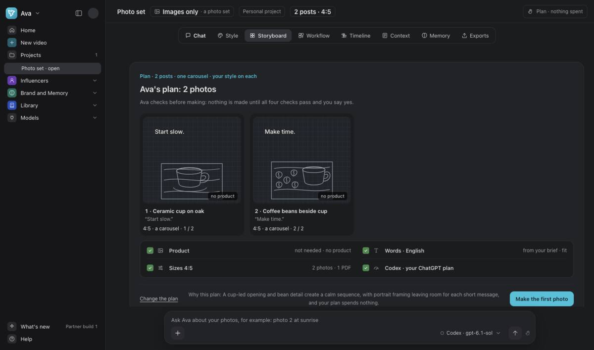
Make the first photo
8 minChoose Make the first photo. Wait for the photo and its checks.
Check the product, words, crop and look in each size and language. Read each check marked needs you.

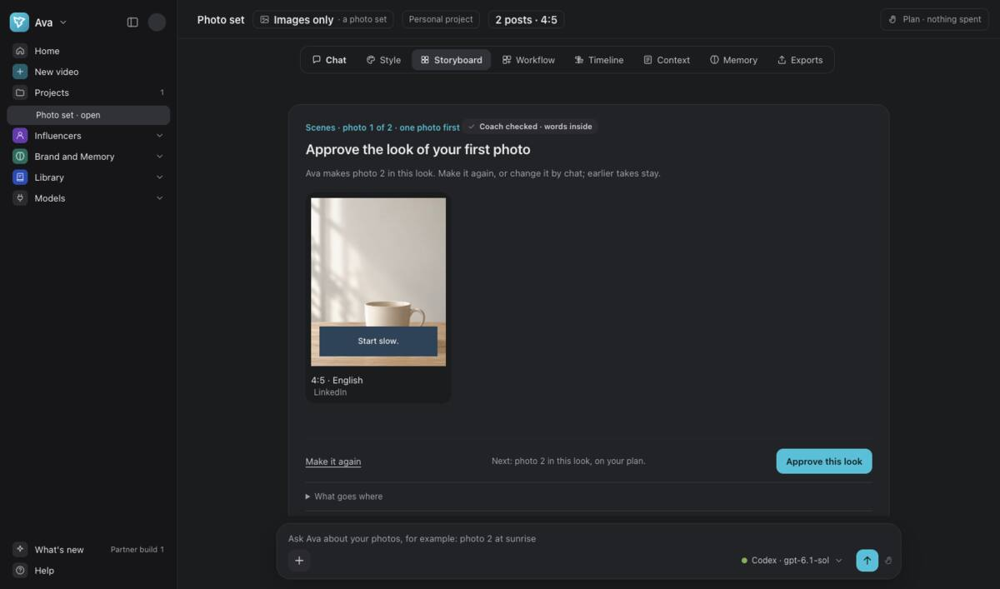
Approve this look
4 minChoose Approve this look only when the first photo is right.
This approval sets the look for the rest. It does not approve the final files.

Make and compare the rest
6 minChoose Make the rest of the set. Compare each photo after its checks finish.
Check the saved files too. In this version, the preview and exported photo can differ.

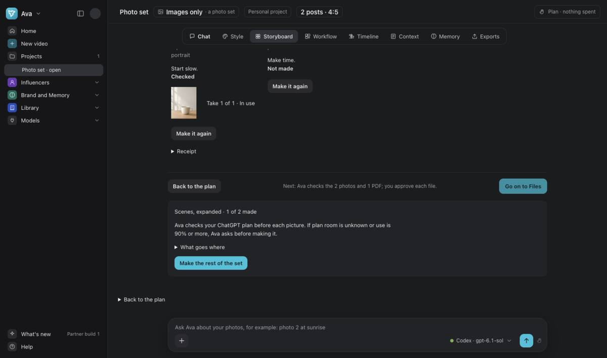
Make the files
5 minOpen Exports for Files. Choose Make each size when all photos are ready.
Wait for Ava to check the count, sizes, crops and words.

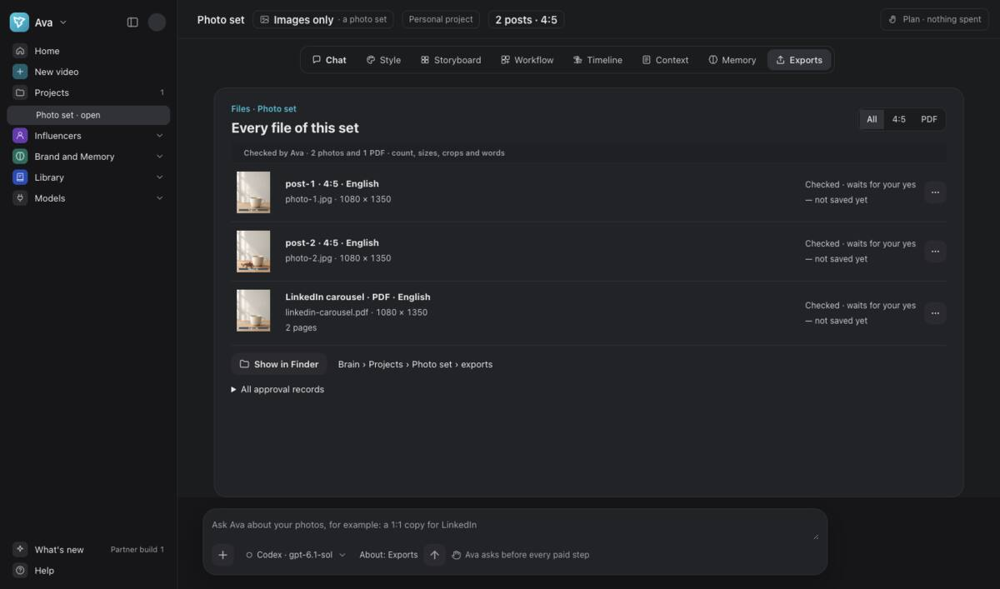
Open and approve each photo
6 minOpen each photo file. Check the saved words, crop, size and product.
Choose Approve and save only when that exact file is right. Repeat for the other photo.

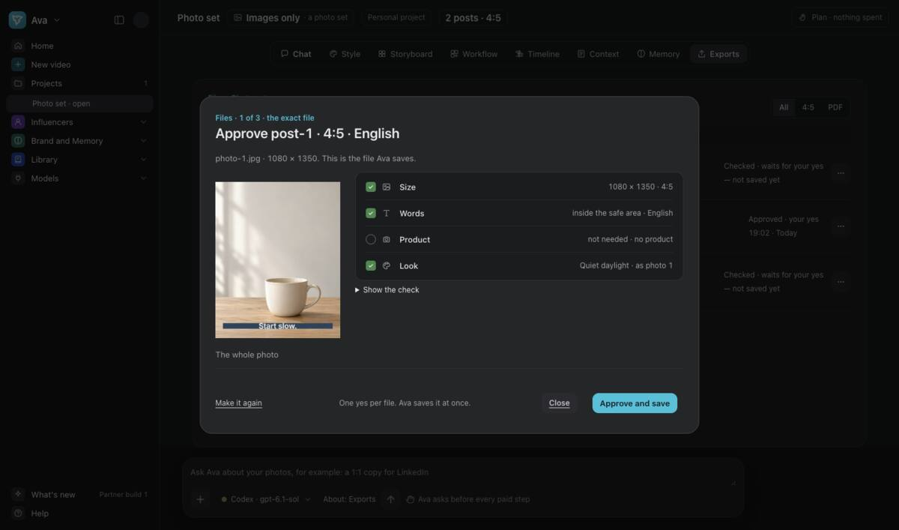
Check and approve the PDF
2 minOpen the PDF. Check each page, its words, crop and page order.
Choose Approve and save only when it is right. A photo approval does not approve the PDF.

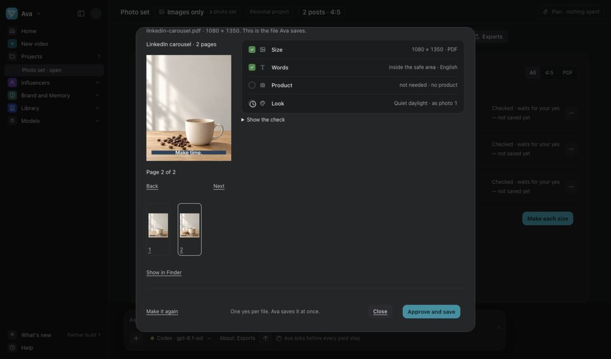